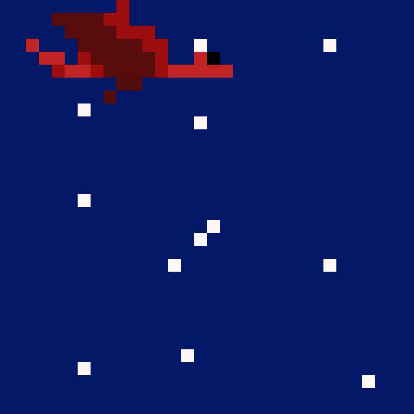
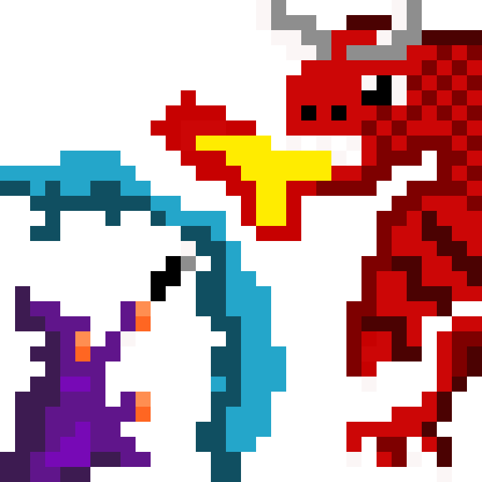

With the Mirah ordeal taken care of, Wizardess descended the last run of spiral stairs of the old castle. Her footsteps were hushed yet swift. Upon reaching the bottom, she found the main door of the castle locked, but a large window was left unguarded. With little effort, she squeezed herself through the tight space. Once outside under the moonlit sky, she crouched against the castle wall and strategized the spells to use. After meticulous thought, she peeked from behind a column but could not find Dread. Then, almost suddenly, a large flapping sound came from above, mixed with the strange smell of dragon fire.
She ducked down on instinct and looked up. A bright red streak flew across the sky against glistening, yet faded, stars. Dread’s massive wings flapped as he patrolled the castle from above. He must have sensed that something was amiss and alas, he noticed the Wizardess crouching behind the column. In an instant, he plunged toward her in fiery rage.
The dragon breathed huge flames and hurled them at the Wizardess. The wand came to her hands swiftly, and she summoned a frost envelope to protect herself from the fire. Once Dread took a brief pause from his vulgar conduct, she seized the opportunity to hurl an ice ball at him, forcing him to back off. They continued fighting in this manner, and as time progressed, both Dread and the Wizardess began to grow weary.
One of the squirrels, kept for Dread’s feast along with the Wizardess, stepped onto the castle’s terrace when the door was found unlocked. Curious, she climbed onto the wall and noticed the Wizardess fighting below. Without wasting any further time, she called upon the other trapped animals and helped hoist the old cannon that had once stood atop the terrace wall in earlier times.
Aid Wizardess in defeating Dread
Rotate the Cannon and Fire
(You have multiple shots)
Winter breathed once more through the forest.
The dragon lay defeated. Wizardess didn’t linger for long; after a brief
salute to the little animals atop the castle,
she levitated and flew back to her chambers in the little hut.
Merry Christmas, dear Reader.
Thank you for your patience and time ❤️.